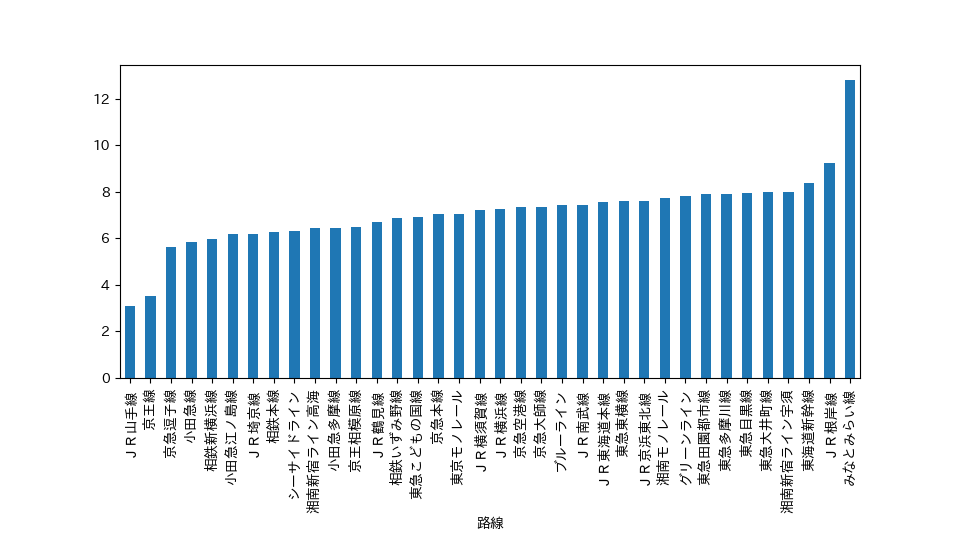
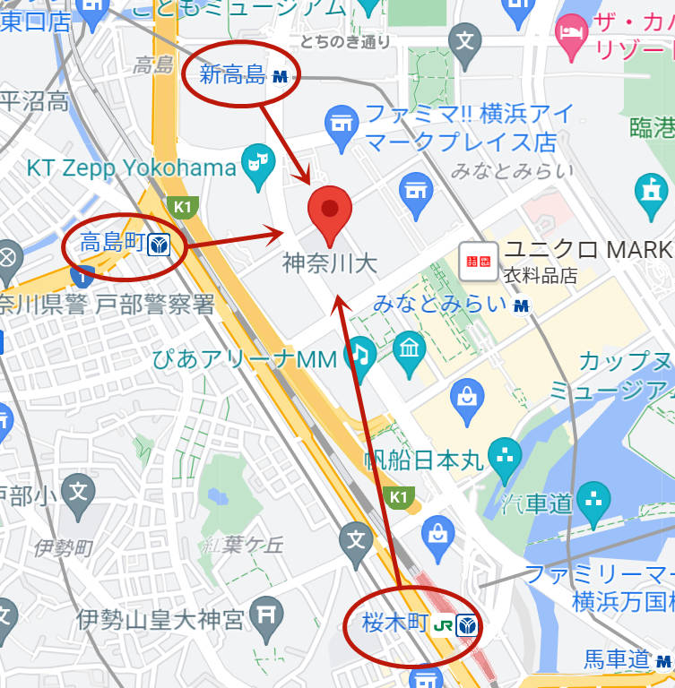
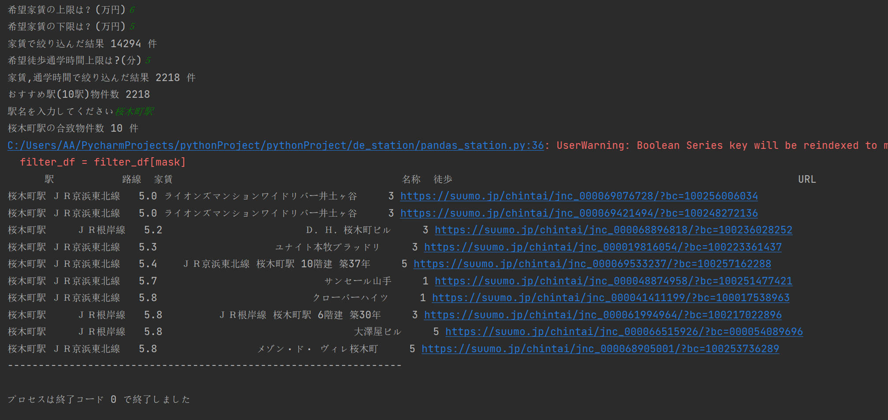

デザイン演習第7回：データ分析
「神奈川大学」周りの部屋を探したいと設定された。

- df_data.groupby("路線").mean().loc[:,"合計時間"].sort_values().plot.bar()
- plt.subplots_adjust(bottom=0.3)
- plt.show()
まずは全体的な路線と家賃の関係を分析すると、「みなとみらい線」が最も高いことが分かります。
なので、みなとみらい線を除きます。残った路線から選択したいと思います。

神奈川大学へ徒歩で20分ぐらいの部屋を探したいので、グーグルマップを通して、「桜木町」「高島駅」「新高島駅」の三つの駅を選びました。
そして、道用先生のコードを参考し、家賃・徒歩時間・駅から絞り込むことができる検索エンジンを作りました。
import pandas as pd # データ分析に用いるライブラリ
import matplotlib.pyplot as plt # グラフ表示に用いるライブラリ
pd.set_option('display.unicode.east_asian_width', True) # 表示のずれを少し緩和
plt.rcParams['font.family'] = 'IPAexGothic' # グラフ表示におけるフォントの指定
data_path = "./data.csv"
df_data = pd.read_csv(data_path, encoding="utf-8-sig")
# ------------------------------------------------------
# 希望家賃(万)
rent_upper = int(input("希望家賃の上限は？(万円)"))
rent_lower = int(input("希望家賃の下限は？(万円)"))
# 家賃で絞り込む
mask = (df_data['家賃'] <= rent_upper) & (df_data['家賃'] >= rent_lower)
# 絞った内容ををfilter_dfに入れる
filter_df = df_data[mask]
print("家賃で絞り込んだ結果", len(filter_df), "件")
# # 通学時間（分）
commuting_time = float(input("希望徒歩通学時間上限は?(分)"))
mask = (filter_df['徒歩'] <= commuting_time)
# filter_dfをさらに合計時間で絞り込む(filter_dfを上書き)
filter_df = filter_df[mask]
print("家賃,通学時間で絞り込んだ結果", len(filter_df), "件")
print("おすすめ駅(10駅)物件数", len(filter_df))
station = input('駅名を入力してください')
# おすすめ駅Top10（filter_top10_station_df）から駅名で更に絞り込みfilter_selected_station_dfに入れる
mask = (df_data['駅'] == station)
filter_df = filter_df[mask]
print(station + "の合致物件数", len(filter_df), "件")
# 全件表示させるようにする
pd.set_option('display.max_rows', None)
pd.set_option('display.max_columns', None)
# 選択した駅の駅、路線、家賃、名称、合計時間、URLを表示する
print(filter_df[["駅", "路線","家賃", "名称", "徒歩", "URL"]].sort_values("家賃").to_string(index=False))
print("----------------------------------------------------------------")

このように条件を満たす部屋が発見できると思います。（なんかエラーが出てきますが、結果としては問題なさそうです…）
ホームページに戻る:
- デザイン演習Ⅰ・Ⅱトップページ
- XBPトップページ